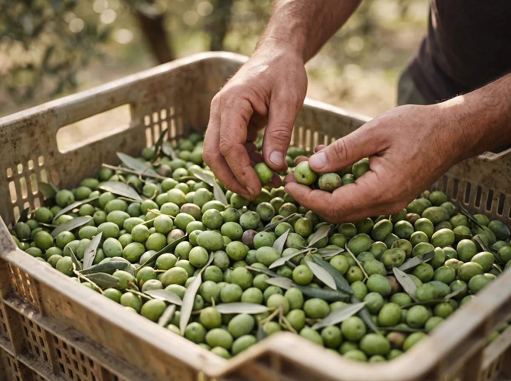
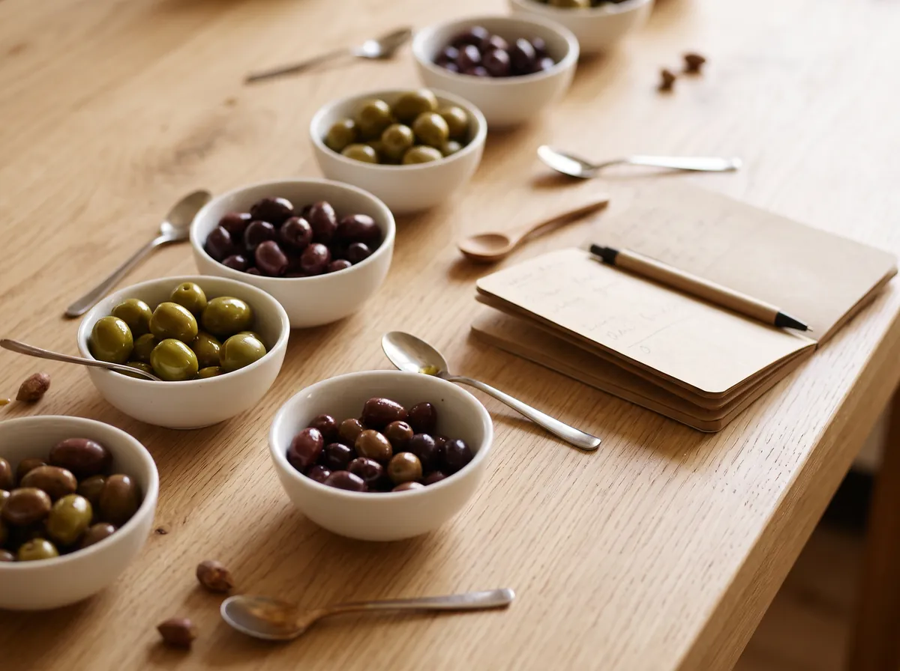
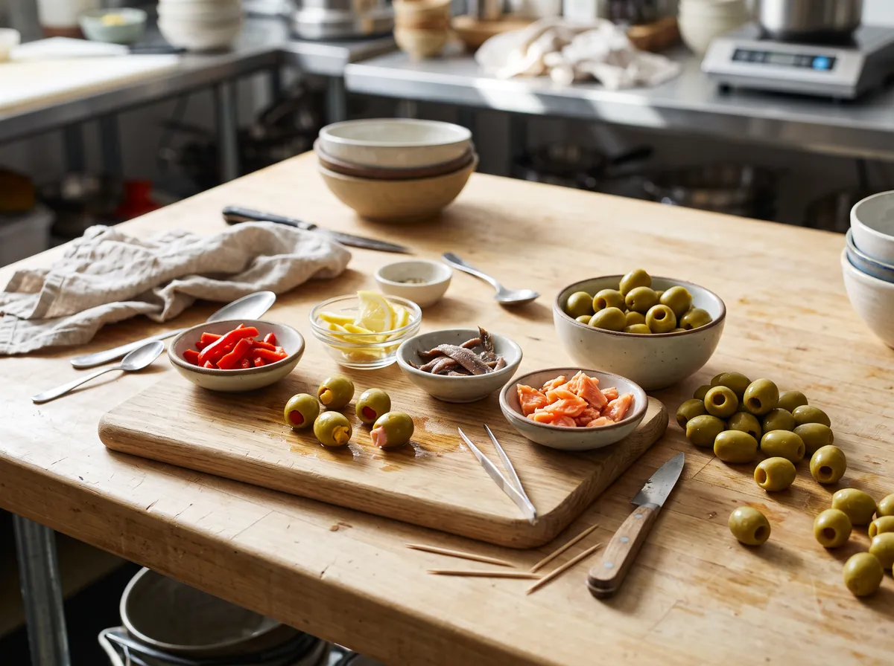
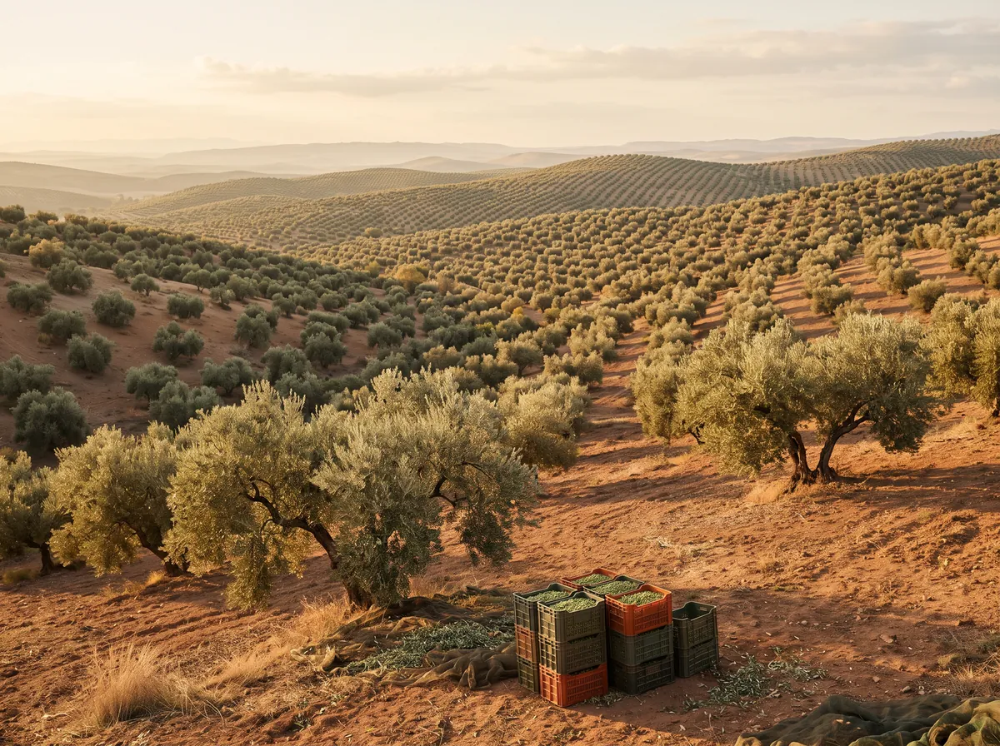

96,99/100
Calidad
IFS Food, nivel superior.
Certificados desde 2017 con la norma internacional de seguridad alimentaria más reconocida. En la última auditoría hemos alcanzado un 96,99 %, por encima de la nota del año anterior.

-

Elegimos bien
Seleccionamos la aceituna con cuidado y la aliñamos con el oficio de toda una vida.
-

Probamos siempre
Hacemos catas de forma regular para que cada tarro sepa igual que el anterior.
-

Seguimos innovando
Nuestro equipo de I+D trabaja en recetas y sabores nuevos.
-

Sabemos de dónde viene
Un sistema de trazabilidad sigue cada producto a lo largo de toda la cadena.